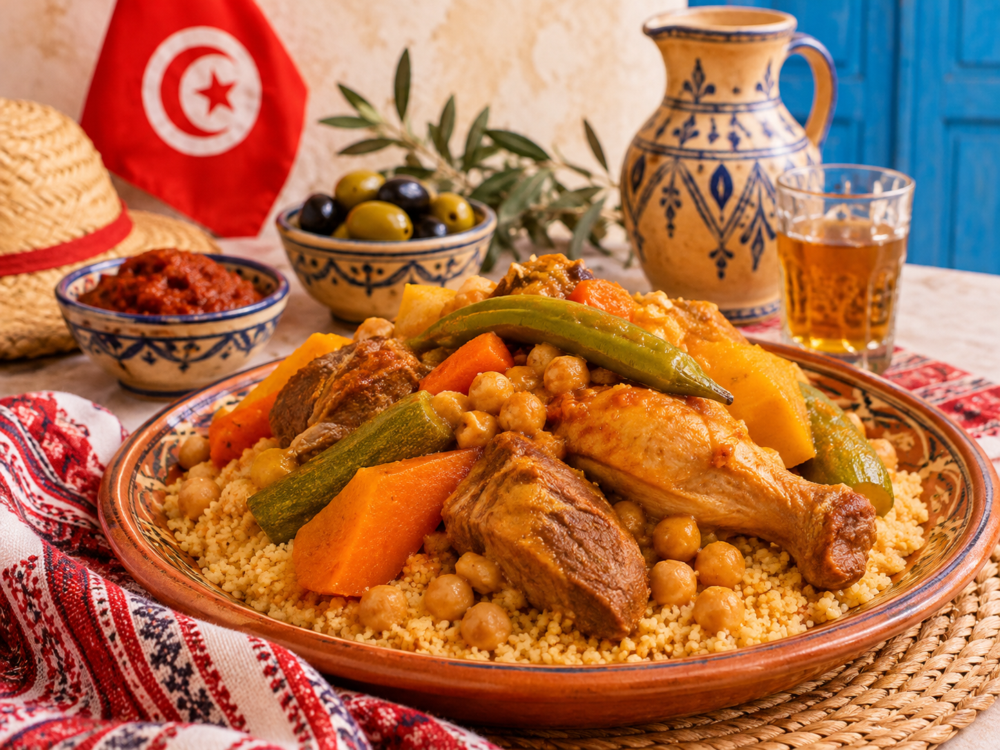

Discover the flavors of our homeland — traditional recipes, fresh local ingredients, and dishes prepared with the warmth of Tunisian hospitality.

Grilled peppers, tomatoes, garlic, olive oil
Crispy malsouka, egg, tuna, parsley, capers
Spiced carrot salad, harissa, cumin, olive oil
Steamed semolina, tender lamb, seasonal vegetables
Eggs, spicy merguez, tomato, peppers, garlic
Slow-cooked beef, cumin, garlic, rich sauce
Oven-roasted chicken, potatoes, Tunisian spices
Fresh fish, chermoula, lemon, roasted vegetables
Seafood, eggs, tomato, peppers, harissa
Pine-seed cream, pastry cream, toasted nuts
Semolina pastry, date filling, honey